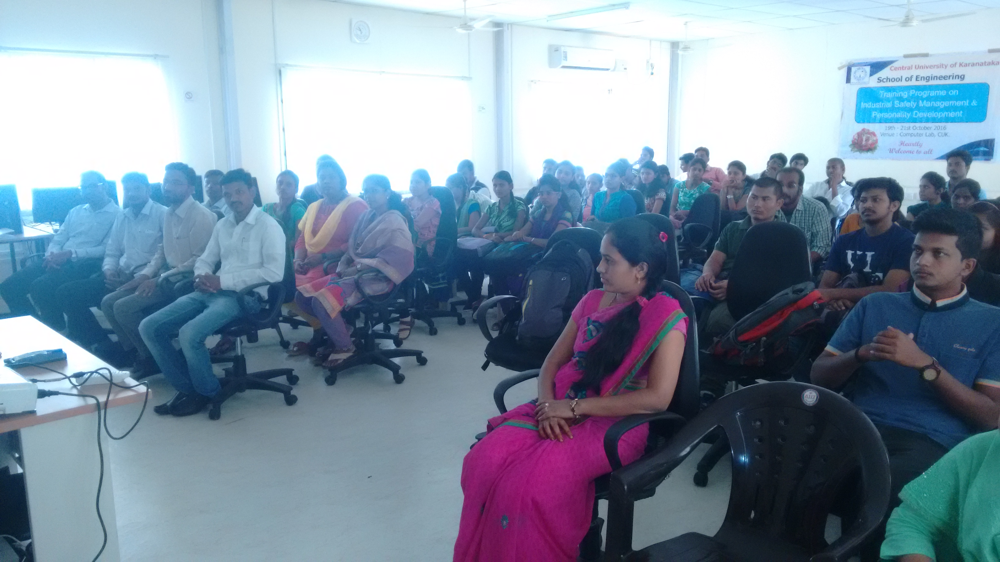
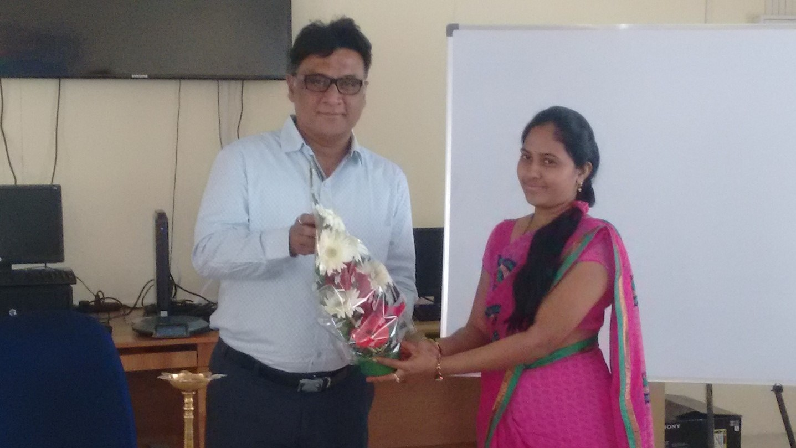

Conferences and Workshops
Conferences Attended
- KSTA Conference on Science and Technology for Disaster Management organized by “The School of Earth Sciences, Central University of Karnataka, Kadaganchi, Kalaburagi on 22nd and 23rd Jan 2015.
- 2nd National Conference on “On Recent Trends in Applied Sciences and Engineering (NCRTSE-2019)” Online/ Virtual based.
- National Conference on “On Recent Trends in Applied Sciences and Engineering (NCRTSE- 2018)” Online/ Virtual based.
- National Conference on “Science and Technology for Inclusive Development” at Gulbarga university Kalaburagi, KSTA sponsored, at GUG campus on 6th and 7th March 2018.
- National Conference on “Advances in Computer Sciences and Engineering (NCACSWBDA- 2016)” Organized by SDM Dharwad, 24th Oct 2016.
Workshops and Trainings attended
- 1. One-week Faculty development program on “Performance Analysis of Computer Network (PACN) from 22nd to 26th September 2014 held at PDA college of Engineering, Kalaburagi.
- One-week Faculty development program on “MATLAB and its Applications in Digital Image Processing and Pattern Recognition from 13th to 17th October 2014 held at PDA college of Engineering, Kalaburagi.
- One-week National Winter Training Program (NWTP) on “Big Data and Hadoop (BDH) organized by EDC IIT Roorkee from 29th February to 4rth March 2016, held at PDA College of Engineering, Kalaburagi.
- Workshop on “Wireless Communication”.
- One Week Short term training Programme on “Automation using IoT”.
- One Week Short term training Programme on “Dynamic Web Designing”.
- One Week Workshop on “Data Analytics using R”.
- Two Day Workshop on “Big Data Analytics”.
- Three Day Training Programme on “Occupational Health, Safety and Environment”
- Six Days Faculty Program on”Real Time WSN and Network Simulator”.
- Workshop on “Android App Development”.
- National Workshop on “Innovative Research Techniques”.
- Faculty Development Programmeon”Soft Computing Approaches to Pattern Recognition”
- One-Week Faculty Development Programme on “Performance Analysis of Computer Network”.
- One-Week Faculty Development Programme on “Hands on Training Programme on MATLAB and its Applications in Digital Image Processing and Pattern Recognition”.
- Three Day Workshop on “Research Methodologies and Latex”.
- Workshop on”IEEExplore and Knimbus E-Library Resources”.
- AICSC(All India Computer Society Congress)
- National Workshop on “Cyber Security”
- IEEE Technology Entrepreneurs’ Summit
- One-week FDP on “Machine Intelligence for Data Analysis Using Python”.
- IEEE workshop on “Wireless Communication”.

.
Webinar Participation
- International Webinar on the topic “Creating opportunities in the face of adversities” delivered by Mr. Pankaj Srivastava, CEO of PracticalSpeak, California, USA.
- International Webinar on the topic “Technology of Sustainability: Potential of technology in shaping the world”.
- EBSCO Information Service, IEEE, “Advancing Your Research And Projects With IEEE Publication”.
Training/ Mentoring/ Tutoring
- 3-Days Workshop Organized and Participated in Training Program on “Occupational Health Safety and Environment” at CUK Campus by School of Engineering from 19th to 21st Oct 2016.

Conducted Workshop at CUK
Courses taken Online
- Online courses on Machine learning, Data Science and Deep Learning with Python- Udemy
- StartUpIndia Learning Program- UpGrad
- Machine Learning with Python-Cognitive class-IBM Initiative
- Data-Science Hands-on with Open Source Tools- Cognitive Class
- Role of Teachers in Quality Enhancement & Accreditation